世界需要小相机 | Lumix L10 测评
曾经流行过一句话，手机导致卡片机的消亡，但随着手机影像升级瓶颈，卡片机又有卷土重来的迹象。CCD、GR 系列、看演唱会神器 ZS 系列，还有今天的主角 L10。
千呼万唤始出来，松下终于更新了 M43 小型机，但不是很多人期待的 GX 系列、GM 系列、LX 系列，反而是一个全新的系列 L10。
01 外观、操作和血统
外观、携带和操作
作为 LUMIX 25周年 L10 推出的相机，可以感受到松下用心打造了一台高端机。金属机身、什么什么皮革、Leica 镜头，特别是钛色，会让我想到 Leica Minilux、Minolta TC-1 那类老旗舰钛合金机。
钛色版还留了一个快门按钮的螺孔。正面没有 LUMIX 标，改在了机身背面的右下角，这样一来，L10钛色板正面就只有一个Leica标。整体外观我觉得好看，但是如果开机了的话…那只能当作L10有两个形态——观赏状态和战斗状态。
自带EVF，强光之下可以看清。翻转屏可以自拍和多角度取景。
光圈环、自定义环、拨盘、LUT 键和比例切换，比例切换可以改功能。都把常用动作留在机身上。实时 LUT 也不是拍完再套滤镜，而是在取景时就决定画面气质。照片 / 视频 / 快慢速视频拨盘也很实用，拍完照片手指一拨就能切到视频或慢动作，而且三种模式的参数分开保存，现场不用重新进菜单。这颗 24-75mm 电动变焦头，用起来能感觉到一点历史：变焦速度不算慢，但绝对不够快。我更习惯在抬手过程中先转一段，让相机到眼前时焦段已经差不多到位。
508g 也决定了它是挂脖机、小包机，不是口袋机，不能按 GR 的裤兜逻辑要求它。L10 的体积和重量，刚好擦到我对小相机的定义。这个体积除了性能原因，也和那块大电池有关。它不是把电池仓做成一个很厚的握把，而是把电池贴着机身放进去，所以机身本体看起来反而比 S9 更薄；代价是电池仓旁边没有余量再放 SD 卡，卡槽只能另找位置。
血统和 Y2000-LX LUT
看到 L10，会很自然让我联想到 LX3、LX5、LX100、Leica D-Lux Type109 这一条高阶便携机脉络里：固定镜头、直接操控、相对紧凑的机身，以及一台机器解决大部分日常题材的野心。
但它不是老机器复刻。LX3 和 LX5 属于小型数码时代的高端卡片机，LX100 / Type109 是 4/3 大底便携变焦的代表，L10 则明显是现代机器：对焦、翻转屏、供电、视频、连接、实时 LUT 和移动端流程都已经换成今天的逻辑。
Y2000-LX LUT 就是在这里接上的，把 LX3 那条千禧年便携机的色彩记忆，接到 L10 的现代取景、直出和分享工作流里。对我来说，这比单纯说“复古”更准确：L10 不是旧机器回来了，而是旧 LUMIX 小相机的感觉，被放进了一台今天能用的相机里。
02 特色功能：比例、直出和人像辅助
比例拨杆：多画幅和自定义入口
L10 这颗固定变焦镜头没有用满标准 M43 面积，但比例拨杆保留了多画幅玩法。4:3、3:2、16:9、1:1 会在镜头可覆盖的范围里，尽量让每个比例用上更大的成像区域。
这个拨杆也可以改成别的功能。比例切换、阶梯变焦、实时 LUT、Photo Style 这些动作，如果都要进菜单，现场就会慢一拍；放到拨杆上，才更像 L10 这种小相机应该有的操作。
4:3 像素利用率最高，后期裁切空间最大，也很适合小红书。日常、旅行、人物、记录这些题材，如果现场没想清楚最终输出，4:3 是最不容易出错的选择。
3:2 更接近 APS-C 和全画幅用户的 35mm 胶片格式。横构图会更像传统相机照片，竖屏时也适合手机浏览。它比 4:3 多裁一点，但如果本来就习惯 3:2 的横竖关系，用起来会更自然。
16:9 是另一种状态。横屏最有电影感，适合山顶、大雾、风景、视频感场景。L10 的 16:9 会用到比 4:3 更宽的横向范围，但仍达不到标准 M43 全宽，而且高度裁切更多。像打鹰山这种雾气和山顶场景，我会想到直接用 16:9 搭配电影感 LUT，让比例和色彩一起进入同一个方向。
1:1 是从 4:3 基础上裁掉左右。搭配宝丽来 LUT 刚好。但是相对于标准 M43 裁切太大了，如果能用满传感器高度做方形，那会更适合真正喜欢方形构图的人。
实时 LUT：直出和现场色彩
实时 LUT 是 L10 很重要的特色。它在取景时就决定画面气质。Y2000-LX 可以接住 LX3 那条小相机色彩记忆，L.Classic、L.Classic Neo、L.Classic Gold、Leica Monochrome 这些 Photo Style 也给了一个更直接的入口。
Magic LUT 和 Lumix Lab 适合放在一起看。前者让相机可以从参考图里生成 LUT，后者负责下载、管理和分享。对我来说，这件事的重点是减少后期犹豫：出门前先准备几个方向，现场看取景器时就知道这张照片要往哪里走。
翻转屏和美颜：自拍、同行合照和小红书直出
翻转屏可以服务低机位、高机位，也可以服务自拍、同行合照、探店人像和小红书图文。这些场景都需要拍完以后更快得到可分享的照片。
美颜功能也应该放在这条线上看。它服务人像直出：肤色更干净一点，脸部状态更容易接受一点，同行人也更愿意被这台相机拍。具体菜单名、档位和作用范围，我会等实机菜单确认后再写死。
近摄：旅行细节和咖啡静物
L10 的近摄能力很适合旅行。24mm 端可以贴近拍咖啡、餐桌、小物和环境细节；75mm 端虽然最近对焦距离更远，但更适合拍植物、野生菌、路牌、手部动作和局部质感。
这是旅行里很实用的补位能力。很多时候我不想为了一个小细节单独换镜头，也不想只用手机补一张。L10 能直接从环境、人像切到近摄，才符合它的一体机用法。
03 L10 画质表现
先确认可用面积
L10 是 M43 旗舰机 GH7 同底，但可用面积小于全面积，这也是很大争议的一个点。
画质表现
L10 这颗镜头全开偏柔，边角锐度也一般。收到 F2.8 后，中心会更锐；再收到 F5.6-F8，拍风光和远景会稳很多。边缘表现有限，这个要直接写清楚。
紫边目前不明显。至少在已有实拍里，高反差边缘没有明显冒紫边，也没有打断观看。它真正需要被讨论的短板，还是全开偏柔和边缘一般。
焦外比虚化量更值得看。L10 没有全幅大光圈那种浅景深上限，但 50mm、75mm 拍人像和静物时，背景过渡柔润，硬、碎、数字感重的问题不明显。
高 ISO 要把 RAW 和 JPG 分开。RAW 里的颗粒可以利用，尤其在老酒店、暗部和黑白或低饱和画面里，它能成为氛围的一部分。JPG 涂抹则要谨慎，降噪如果把颗粒抹成泥，质感反而会掉。
动态范围也要按真实场景看。窗边人像的脸和窗外、老酒店灯光下的肤色和暗部、山顶大雾里的亮部层次，以及低饱和处理会不会把阴影压得太死，都比一句参数更有用。
L10 画质测试参数表
| 焦段 | 光圈 | ISO |
|---|---|---|
| 24mm | 全开 | ISO 100 |
| 24mm | F2.8 | ISO 100 |
| 24mm | F4 | ISO 100 |
| 24mm | F5.6 | ISO 100 |
| 24mm | F8 | ISO 100 |
| 35mm | 全开 | ISO 100 |
| 35mm | F2.8 | ISO 100 |
| 35mm | F4 | ISO 100 |
| 35mm | F5.6 | ISO 100 |
| 35mm | F8 | ISO 100 |
| 50mm | 全开 | ISO 100 |
| 50mm | F2.8 | ISO 100 |
| 50mm | F4 | ISO 100 |
| 50mm | F5.6 | ISO 100 |
| 50mm | F8 | ISO 100 |
| 75mm | 全开 | ISO 100 |
| 75mm | F4 | ISO 100 |
| 75mm | F5.6 | ISO 100 |
| 75mm | F8 | ISO 100 |
L10 镜头单项锐度结果
这组图只看 L10 自己。中心锚点固定在 R&F 标识，边角锚点选在有窗格、屋顶和建筑线条的位置。这样看起来会比普通样张更苛刻，但也更容易看出这颗固定变焦镜头在不同焦段和光圈下的变化。
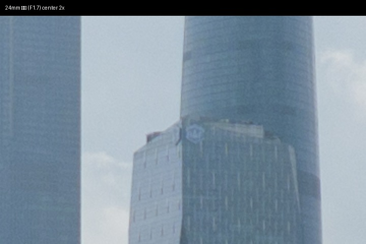
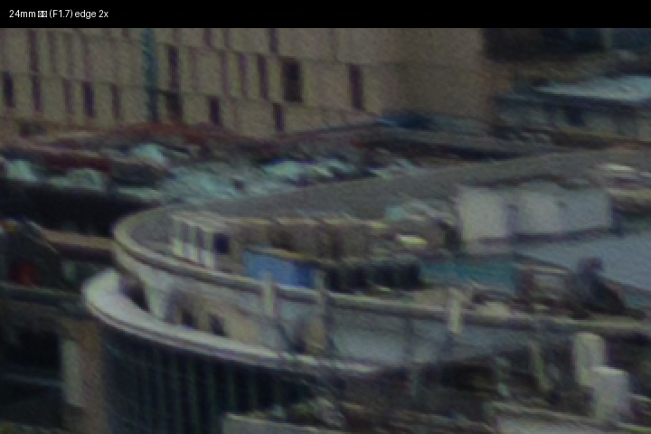
24mm 全开时，中心的 R&F 标识还能分辨，但建筑边缘和玻璃线条不会很利落。边角位置更明显，窗格、屋顶边线和树叶会混在一起。这个光圈适合保留进光量和现场气氛，不适合拿来追远景细节。
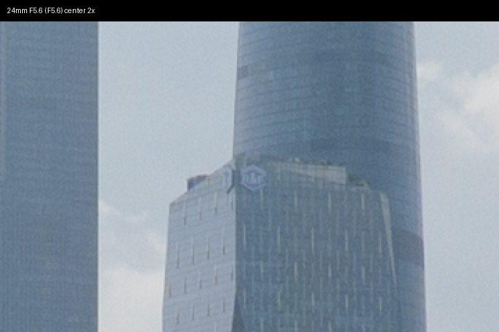
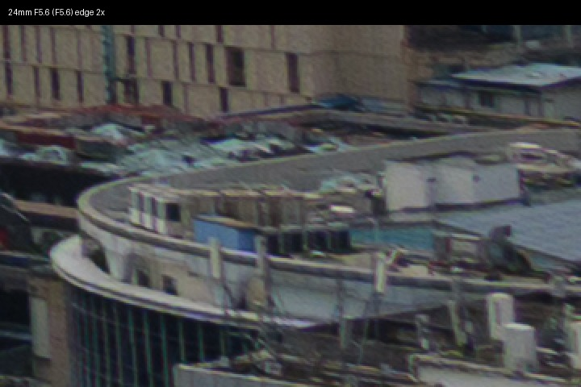
收到 F5.6 后，中心线条更容易分开，R&F 字样和楼体边缘更好判断。边角仍然不是强项，但比全开更适合拍城市远景。24mm 如果要拍风光和建筑，我会更愿意把光圈收到 F5.6 或 F8。
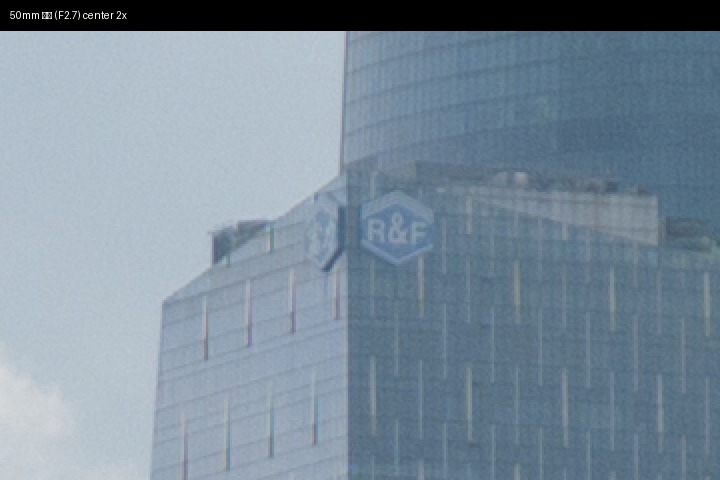
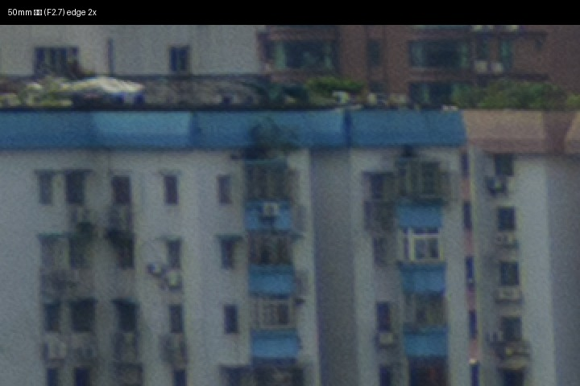
50mm 全开已经比 24mm 全开更容易接受。中心的 R&F 标识和建筑玻璃结构可以看清，但边角住宅窗格还是会松。这个焦段我更愿意用在人像、街景局部和旅行中的中景，不会把它当成严肃建筑细节档。
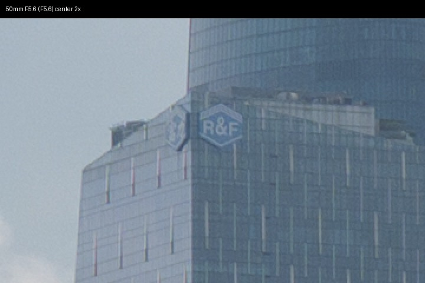
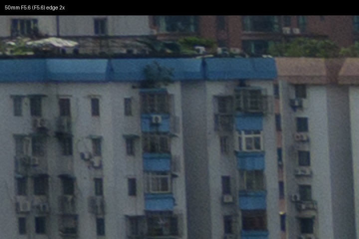
50mm 收到 F5.6 后，中心细节已经足够支撑日常远景。边角还是能看出这颗镜头的限制，窗框和空调外机不会像大底可换镜头系统那么清楚。小红书和日常分享里，这个差距不会每张都跳出来；但放到 200% 看，它确实存在。
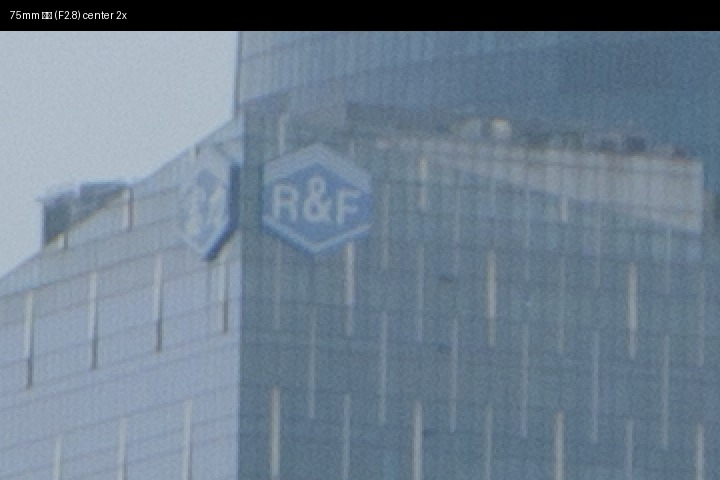
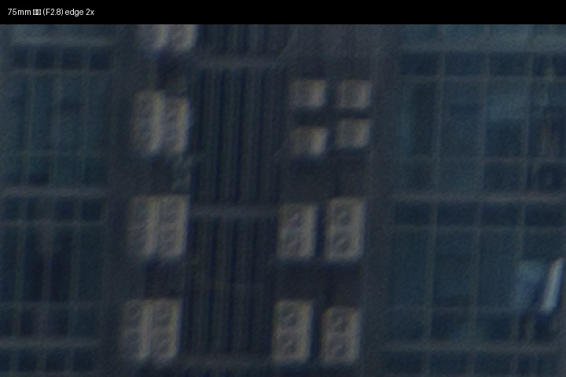
75mm 全开时，中心还能交代建筑文字和玻璃结构，边角会更松。这个焦段的意义不只是锐度，而是它可以直接拍到远处局部，不用从 24mm、28mm 或 35mm 里裁中间。
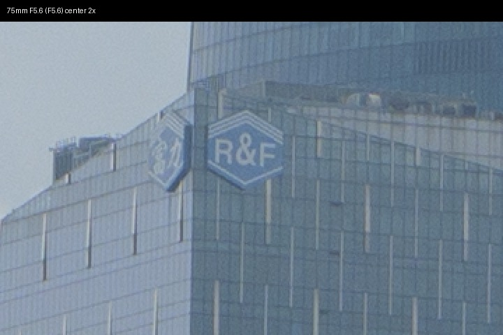
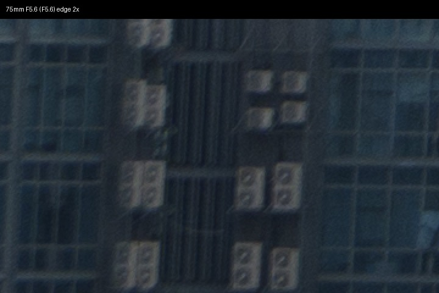
收到 F5.6 后，75mm 的中心细节更可靠。边角仍然不能按高规格长焦镜头期待，但拍旅行里的楼体、招牌、远处窗户和局部景物，这个焦段会给 L10 留下真实光学取景的优势。它的长端锐度不算强，优势是不用靠大幅裁切才能得到这个视角。
04 和几台参照对象具体比一比
裁切余量和剩余像素
APS-C 约是 L10 可用面积的 2.12 倍，约是标准 M43 的 1.63 倍，L10 可用面积约是一英寸的 1.49 倍。
L10 的传感器位置其实很清楚：它比一英寸大一档，提升有限；比标准 M43 小一圈；和 APS-C 差距明显；和全画幅差距更大。
L10 的成立点，是 24-75mm 光学变焦、EVF、实时 LUT 和完整相机体验。
高像素裁切要看剩余像素。裁得越狠，可用像素会按裁切倍率平方下降。
如果按 L10 的 24-75mm 来对齐视角，GR4 从 28mm 裁到 35mm 还剩约 16.5MP，裁到 50mm 约 8.1MP，裁到 75mm 只剩约 3.6MP。X100VI 因为有 40.2MP，余量好很多：35mm 原生 40.2MP，裁到 50mm 约 19.7MP，裁到 75mm 约 8.8MP。S9 这里按 40mm 定焦来算，裁到 50mm 约 15.5MP，裁到 75mm 约 6.9MP。
| 目标视角 | L10 | GR4 从 28mm 裁切 | X100VI 从 35mm 裁切 | S9 从 40mm 裁切 | 直观判断 |
|---|---|---|---|---|---|
| 24mm | 20.4MP 光学 | 无法通过裁切变广 | 无法通过裁切变广 | 无法通过裁切变广 | L10 有原生广角覆盖 |
| 35mm | 20.4MP 光学 | 约 16.5MP，1.25x 裁切 | 40.2MP 原生 | 无法通过裁切变广 | X100VI 是原生视角，GR4 还有不错余量 |
| 50mm | 20.4MP 光学 | 约 8.1MP，1.79x 裁切 | 约 19.7MP，1.43x 裁切 | 约 15.5MP，1.25x 裁切 | X100VI 和 S9 仍然可用，GR4 开始明显吃像素 |
| 75mm | 20.4MP 光学 | 约 3.6MP，2.68x 裁切 | 约 8.8MP，2.14x 裁切 | 约 6.9MP，1.88x 裁切 | L10 的真实光学长端优势最明显 |
这些机器都能裁，差别在裁完以后还剩多少画面信息。X100VI 裁到 50mm 仍然很能打，S9 从 40mm 裁到 50mm 也有余量，GR4 的 35mm 也还能用。到 75mm 时，L10 直接用光学长端拍到那个视角。
裁切和光学长焦是两种成像方式。GR4 的 28mm 很纯粹，X100VI 的 35mm 和 40.2MP 很强，手机主摄也可以通过高像素、多帧和算法做出看起来不错的 2x。它们的共同点，是从一个较广视角里拿中间，或者通过算法补足细节。
L10 像素只有 20.4MP，放在今天不算夸张。它的 50mm 和 75mm 是真实光学焦段。构图时看到的就是那个视角，透视、压缩感、主体比例和背景关系都跟着焦段一起变化。
L10 靠 24-75mm 光学变焦保持焦段一致性。这是它区别于 GR、X100VI 和手机的重要点。
日常场景里，差别先从题材发生
参数表能说明裁切以后还剩多少像素，但真正出门时，我先遇到的是题材。咖啡厅、旅行、扫街、人像，每个场景都会逼我做不同选择：拍完整环境，还是拍一个人；拍桌上的小东西，还是拍远处的局部；抓一个突然出现的瞬间，还是等一个画面慢慢成立。
咖啡厅和探店里，我通常会拍三类东西：空间、同行的人、桌面细节。空间需要广一点，同行的人需要一个自然的距离，杯子、菜单、甜品和手部动作又需要再靠近一点。GR4 的 28mm 很适合把桌面、窗边、墙面和同行的人一起带进来，照片会更像“我当时坐在这里”。X100VI 的 35mm 会更聚焦一点，窗边的人、桌上的杯子、店里的装饰，更容易形成一张完整照片。L10 的 24-75mm 可以在同一个座位上切换题材：24mm 拍店内环境，35mm 或 50mm 拍桌面和同行的人，75mm 拍杯子、菜单、手部动作和窗边细节。近摄和实时 LUT 在这里也会一起进入拍摄过程，一个负责补细节，一个负责现场就决定这家店的颜色方向。
旅行风光里，大场景和远处局部经常同时出现。站在街口时，我会先想拍建筑、广场、道路和人流；走近一点，又会看到屋顶、招牌、窗户、船、山体和路边植物。GR4 的 28mm 适合城市步行，拍的是人走到现场时看到的环境。X100VI 的 35mm 更像一个稳定的旅行视角，主体关系会比 28mm 更明确，40.2MP 也给后期裁切留了余地。L10 的 24mm 可以拍完整场景，75mm 可以把远处的楼、船、招牌、窗户和山体拉近一点。旅行里很多照片不是提前计划好的，走到那里才看到，24-75mm 会多接住一些临时出现的题材。
扫街时，有些画面突然发生，有些画面在远处慢慢形成。前一种需要相机小、取出快、存在感低；后一种需要我能等，也能选择距离。GR4 在街角、路口、店门口、地铁口很方便，28mm 会把人和环境一起放进画面，现场关系保留得多。X100VI 的 35mm 更适合等一个画面成立：等路人走进构图，等光落到墙上，等背景和人物刚好对上。L10 的 24mm 拍路口和街道关系，50mm 拍店门口的人，75mm 拍远一点的招牌、橱窗、动作和细节。它不负责最快的那一下，但街上那些慢慢出现的画面，L10 会给我更多选择距离的余地。
人像里，我会先看要保留多少背景。朋友坐在饭桌边、走在街上、站在房间里，环境本来就是照片的一部分；但拍半身、表情、肩颈、手部和道具时，距离又会变。GR4 的 28mm 更像环境记录，适合拍这个人当时在这个地方。X100VI 的 35mm 更适合日常半身和旅行人像，也更有“我给你拍一张”的仪式感，高像素还能给后期裁切留一点空间。L10 的 24mm 可以拍人在环境里，50mm 适合半身，75mm 可以拍表情和更集中的背景关系。我本来就不想把人拍得太正确，背景必然是画面中的重要组成；L10 的变焦让我可以在环境、人和细节之间多做一点选择。
对比测试怎么拍
前面先看了 L10 自己的中心和边角。到这里再放参照机器，只确认 L10 的 24-75mm 光学变焦在裁切机型面前到底换回了什么，不展开成完整横评。
F5.6 锐度对比参数表
| 相机 | 焦段 | 光圈 | ISO | 裁切剩余像素 / 状态 |
|---|---|---|---|---|
| L10 | 24mm 光学 | F5.6 | ISO 100 | 20.4MP |
| L10 | 35mm 光学 | F5.6 | ISO 100 | 20.4MP |
| L10 | 50mm 光学 | F5.6 | ISO 100 | 20.4MP |
| L10 | 75mm 光学 | F5.6 | ISO 100 | 20.4MP |
| S9 | 24mm 光学，18-40mm | F5.6 | ISO 100 | 24.2MP |
| S9 | 28mm 光学，28-70mm | F5.6 | ISO 100 | 24.2MP |
| S9 | 35mm 光学，28-70mm | F5.6 | ISO 100 | 24.2MP |
| S9 | 50mm 光学，28-70mm | F5.6 | ISO 100 | 24.2MP |
| S9 | 70mm 光学，28-70mm | F5.6 | ISO 100 | 24.2MP |
| S9 | 40mm 裁到 50mm | F5.6 | ISO 100 | 约 15.4MP |
| S9 | 40mm 裁到 70mm | F5.6 | ISO 100 | 约 7.8MP |
| S9 | 40mm 裁到 75mm | F5.6 | ISO 100 | 约 6.8MP |
| GR4 | 24mm | - | - | 28mm 无法裁切变广 |
| GR4 | 28mm 原生 | F5.6 | ISO 100 | 约 25.7MP |
| GR4 | 28mm 裁到 35mm | F5.6 | ISO 100 | 约 16.5MP |
| GR4 | 28mm 裁到 50mm | F5.6 | ISO 100 | 约 8.1MP |
| GR4 | 28mm 裁到 70mm | F5.6 | ISO 100 | 约 4.1MP |
| GR4 | 28mm 裁到 75mm | F5.6 | ISO 100 | 约 3.6MP |
| X100VI | 24mm | - | - | 35mm 无法裁切变广 |
| X100VI | 28mm | - | - | 35mm 无法裁切变广 |
| X100VI | 35mm 原生 | F5.6 | ISO 125 | 40.2MP |
| X100VI | 35mm 裁到 50mm | F5.6 | ISO 125 | 约 19.7MP |
| X100VI | 35mm 裁到 70mm | F5.6 | ISO 125 | 约 10.1MP |
| X100VI | 35mm 裁到 75mm | F5.6 | ISO 125 | 约 8.8MP |
这组白天锐度静态图只看 RAW 导出 JPG，观察点固定在 R&F 标识附近。下面这些图和交互工具使用同一批素材，统一按 R&F 的实际显示尺寸归一化，再用 200% 像素放大看建筑边缘、窗格和文字细节。
这次实际放进正文预览的组合是：
- L10 对 S9 光学：50mm、75mm；S9 光学组没有 75mm 素材，预览区直接标注无法拍摄该焦段。
- L10 对 S9 40mm 裁切：50mm、75mm。
- L10 对 GR4 28mm 裁切：50mm、75mm。
- L10 对 X100VI 35mm 裁切：50mm、75mm。
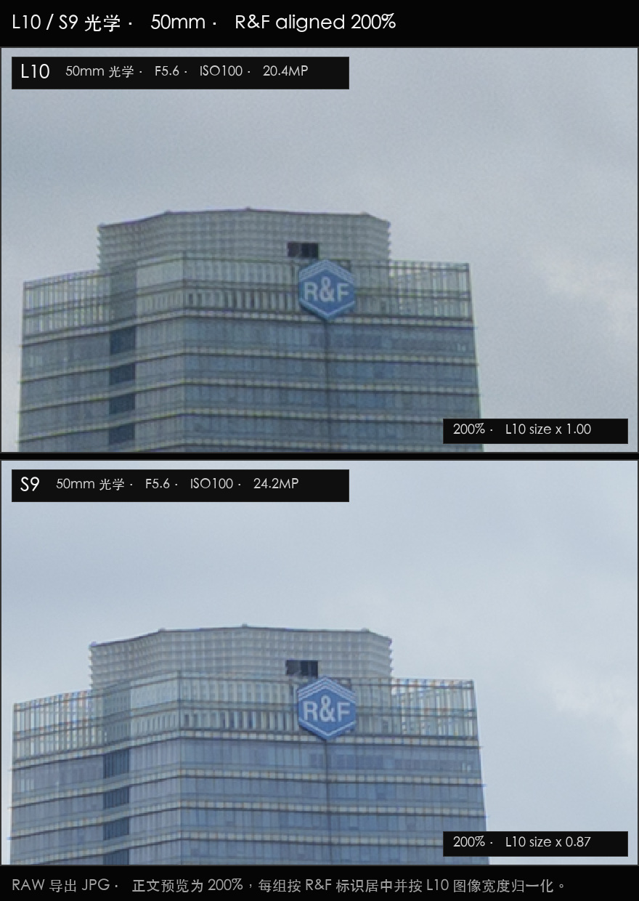
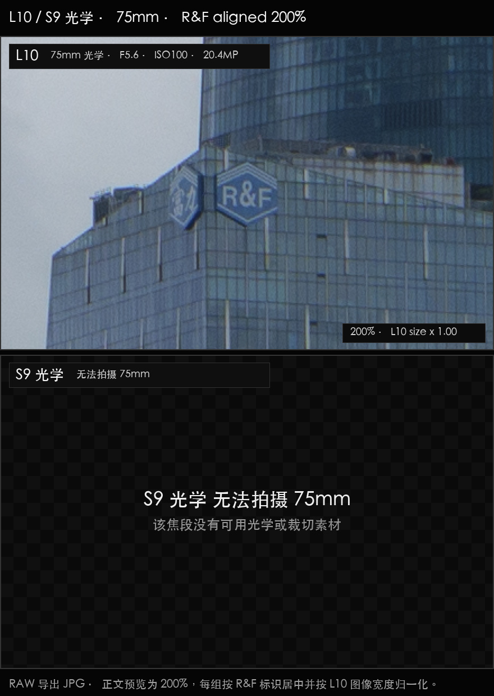
S9 用 28-70mm 光学变焦时，远处窗格、楼体边缘和 R&F 字样保留得更清楚。L10 收到 F5.6 后可以支撑日常城市远景，局部线条没有 S9 光学组那么利落。
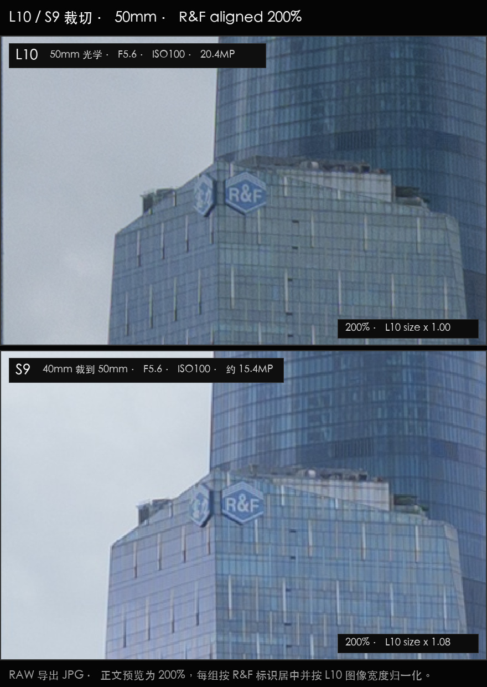
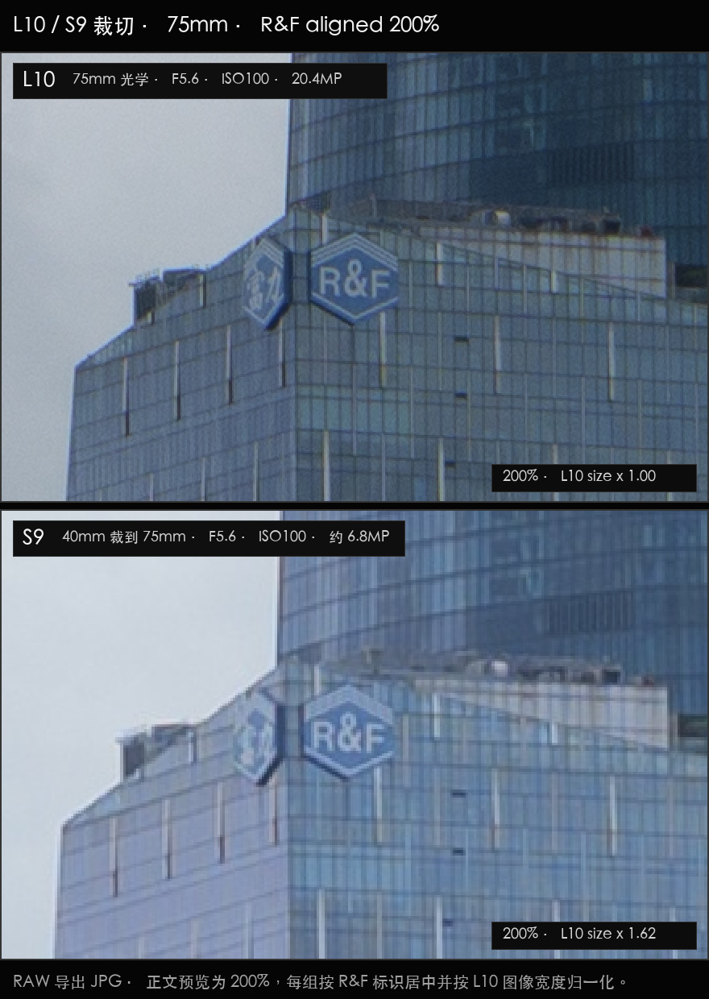
S9 从 40mm 裁到 50mm 剩下约 15.4MP，画面保留了比较充足的余量；裁到 75mm 剩下约 6.8MP，R&F 字样和窗格线条开始变得松散，更适合应急取景。
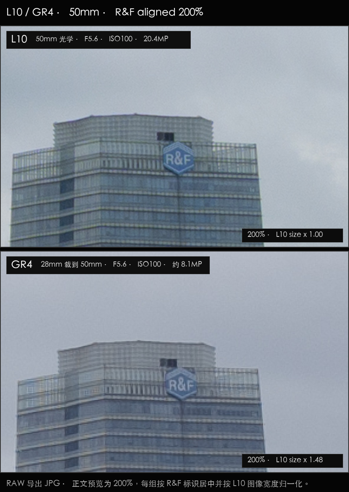
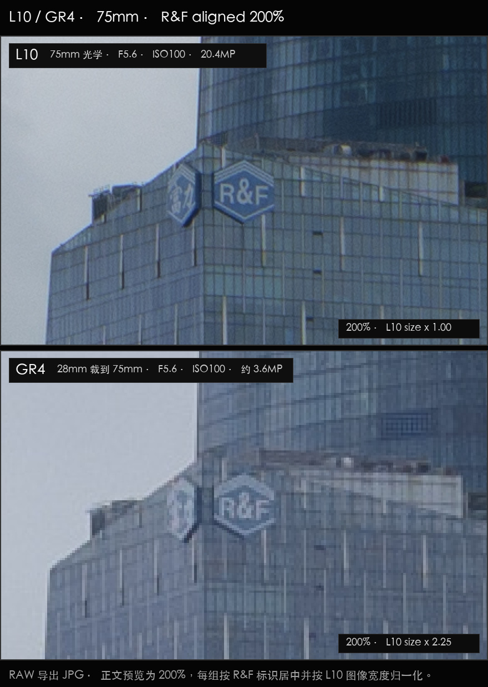
GR4 从 28mm 裁到 50mm 剩下约 8.1MP，作为记录还能接受；裁到 75mm 剩下约 3.6MP，远景细节减少得更明显。L10 的 75mm 仍然保留完整 20.4MP，长端构图不用依赖大幅裁切。
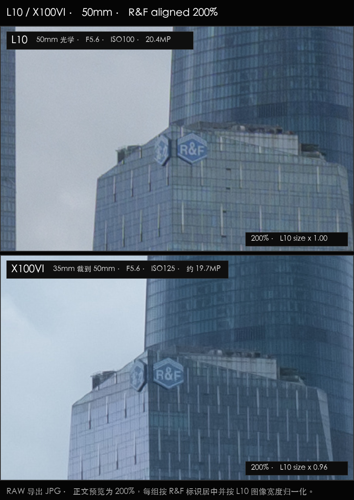
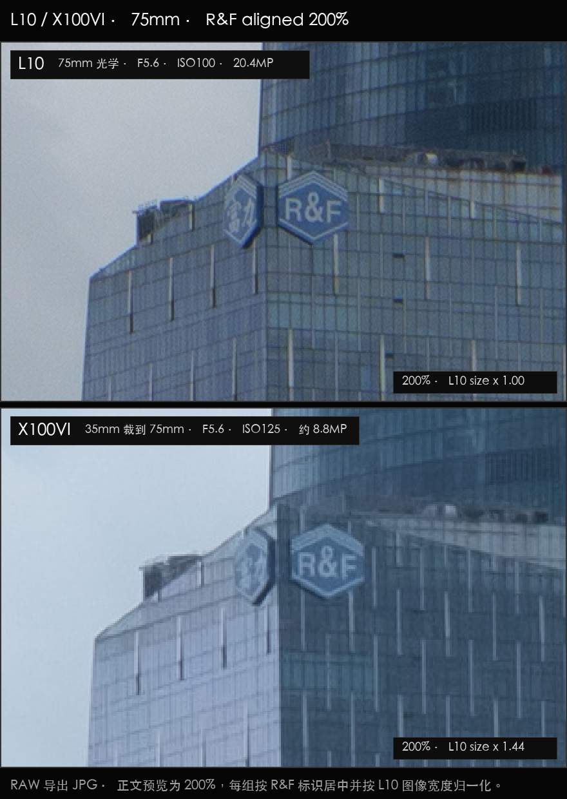
X100VI 的 40.2MP 给裁切留下很多空间。35mm 裁到 50mm 剩下约 19.7MP，R&F 字样和窗格还能保留比较清楚的结构，这个程度我可以接受。继续裁到 75mm 时剩下约 8.8MP，文字边缘和窗格线条已经明显变松，更适合应急取景，不适合当成常规长焦用。
L10 在 50mm 和 75mm 都是 20.4MP 光学成像。拍摄时转到对应焦段，楼体比例、背景压缩和取景范围就已经确定，后面不需要再从广角画面里截取中间区域。它的 F5.6 远景细节够日常风光和城市照片使用，24-75mm 连续光学变焦让它在 50mm、75mm 都保留完整 20.4MP。锐度可以继续挑剔，但剩余像素和取景方式这两件事，裁切机型很难同时补回。
夜晚 ISO 噪点对比
这组夜景对比只看 RAW 导出 JPG。观察点固定在 IFC 字样附近，工具里可以拖动看全图；下面这些图统一按 IFC 的实际显示尺寸归一化，再用 200% 像素放大看颗粒、边缘和灯牌高光。
这次实际放进对比的组合是：
- L10 28mm 对 GR4 28mm：ISO 1600、ISO 3200、ISO 6400、ISO 12800。
- L10 35mm 对 S9 35mm：ISO 1600、ISO 3200、ISO 6400、ISO 12800。
- L10 35mm 对 X100VI 35mm：ISO 1600、ISO 3200、ISO 6400、ISO 12800。
文章里直接放四档。这里的可用性结论只针对 L10：ISO 1600 和 ISO 3200 是更接近日常会用到的位置，ISO 6400 对 L10 来说已经是极限，ISO 12800 基本不可用，只是放在这里看 RAW 导出 JPG 会崩到什么程度。GR4、S9 和 X100VI 只是用来定位 L10，不在这里给它们单独下结论。
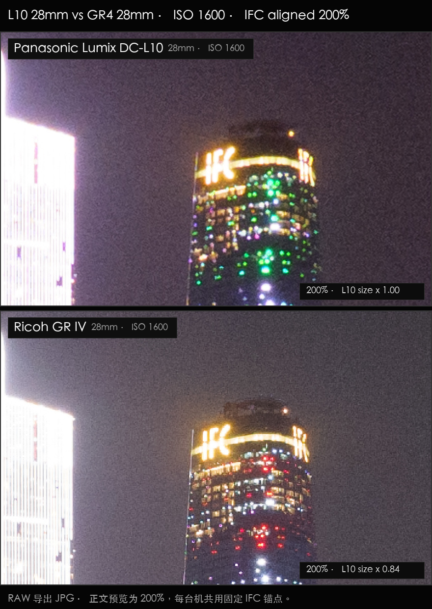
ISO 1600 下，L10 和 GR4 都还在可用状态。GR4 的画面更干净一点，灯牌边缘和暗部颗粒收得更紧；L10 的颗粒已经更明显，但还不是难看的涂抹。这个 ISO 对 L10 来说还可以接受，尤其是夜景氛围图，不会因为噪点直接崩掉。
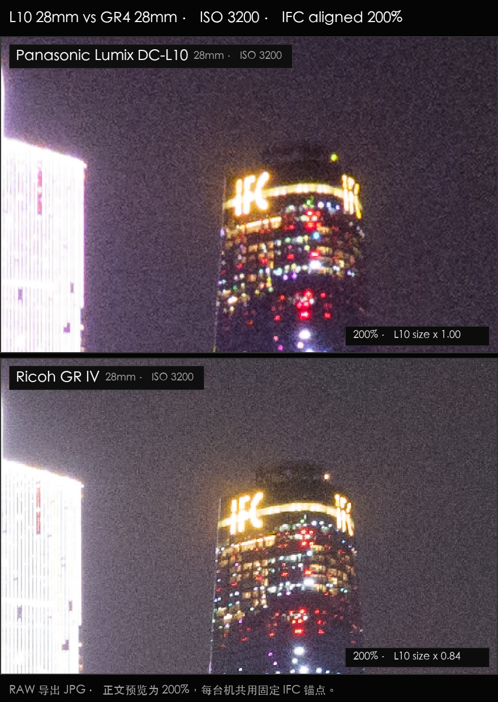
ISO 3200 开始，L10 的颗粒会从“有质感”变成“能被注意到”。GR4 也有噪点，但灯牌边缘和暗部结构还稳一些。这个档位对 L10 不是不能用，只是后期不要再大幅拉暗部，否则颗粒会很快冒出来。
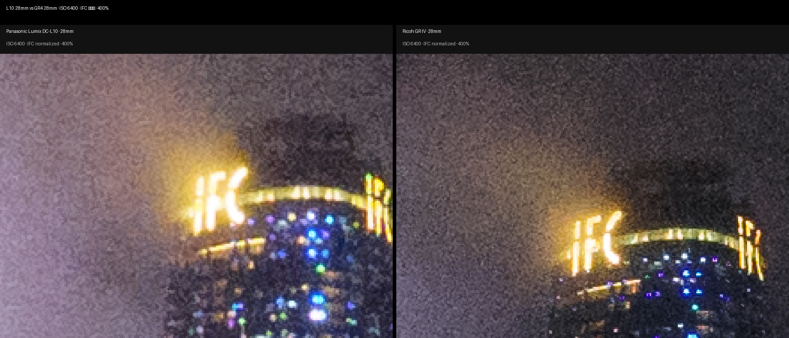
到 ISO 6400，L10 已经来到极限位置。颗粒和色彩噪点会明显出来，IFC 字样边缘也开始松。GR4 仍然有噪点，但线条边缘相对更稳，暗部没有那么快散开。L10 在这里不是完全不能拍，但我会把它当成不得不用时的兜底档，而不是正常夜景画质档。
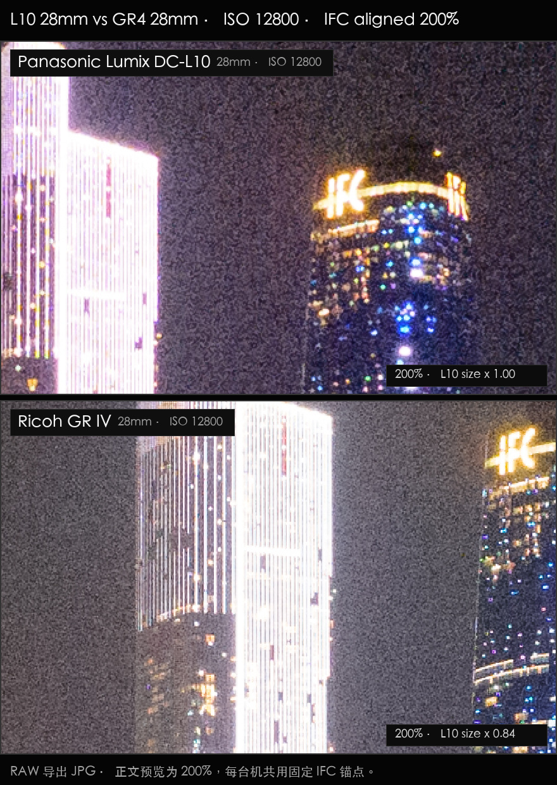
对 L10 来说，ISO 12800 基本就是实验档。RAW 导出 JPG 里还能看到一点现场质感，但灯牌边缘、雾气和暗部已经混在一起，细节判断会很吃力。GR4 也会粗，但在这组里更抗一点。L10 这个档位我不会拿来正常使用，只是放在这里看它的崩坏方式。
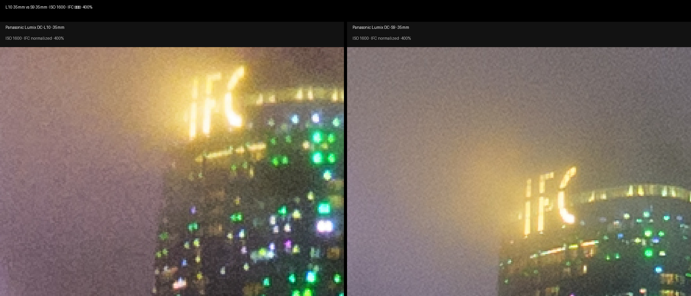
和 S9 放在一起，差距从 ISO 1600 就能看出来。S9 的暗部更干净，高光边缘更有余量；L10 的颗粒更早出现，灯牌周围的雾和光晕也更容易糊成一片。这不是 L10 失败，而是全画幅在夜景里本来就有优势。
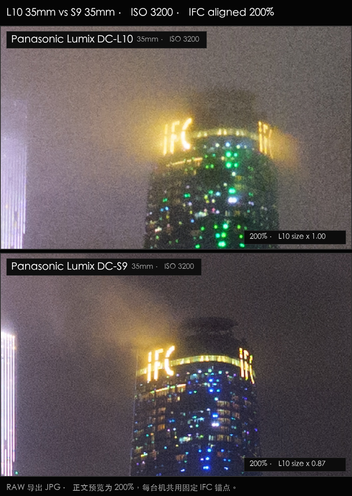
到 ISO 3200，S9 仍然像是在正常工作，L10 已经能看出压力，但这个档位还属于我会实际使用的范围。L10 的画面还能保留现场气氛，只是灯牌边缘和暗部颗粒会比 S9 更早松开。这个差距不是小图一眼秒杀的那种，但会影响你后期还能不能继续拉。
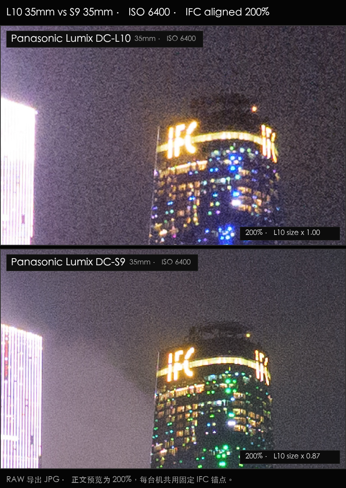
ISO 6400 时，S9 还能保留比较明确的边缘和暗部层次，L10 的颗粒会更粗，细小窗光和灯牌边缘更容易被噪点吞掉。这个差距会影响后期空间：S9 还能继续拉，L10 更适合定好曝光和色调以后少动。
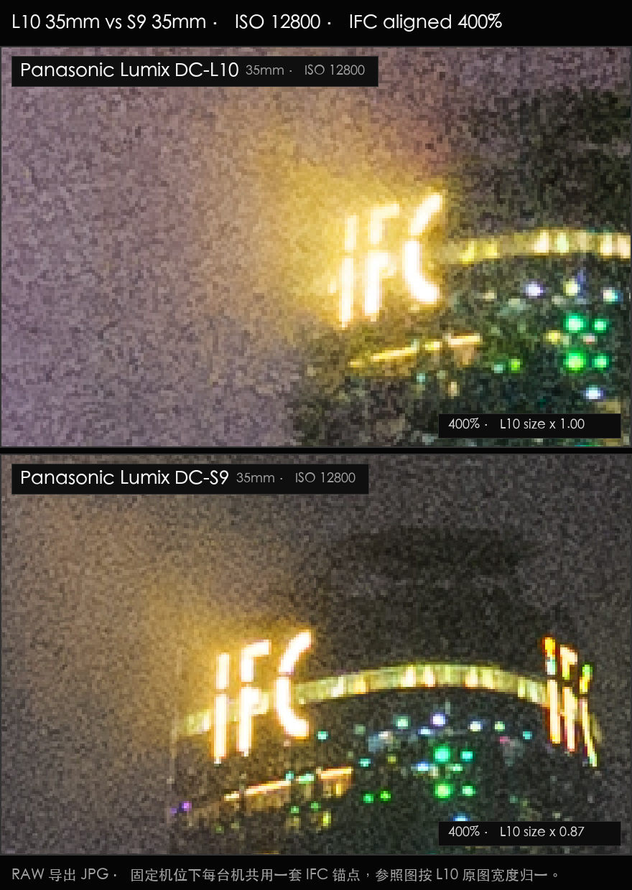
ISO 12800 下，S9 作为全画幅参照还是有余量，这里真正要下结论的是 L10。L10 到这里基本不适合正常使用，它更像是在告诉我：如果真的暗到只能推到这个 ISO，就该降低快门、找栏杆靠一下，或者接受这只是实验样张，不再追求细节。
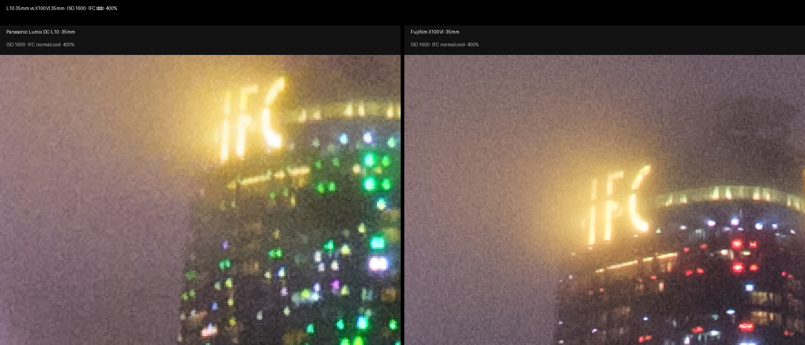
X100VI 这组要先把大小对齐再看。按原始像素 100% 看，X100VI 会因为 40MP 把物体放得更大，视觉上不公平。归一化以后，X100VI 的细节和噪点控制仍然更从容，L10 的颗粒更早、更粗，但 L10 的画面没有完全散掉。
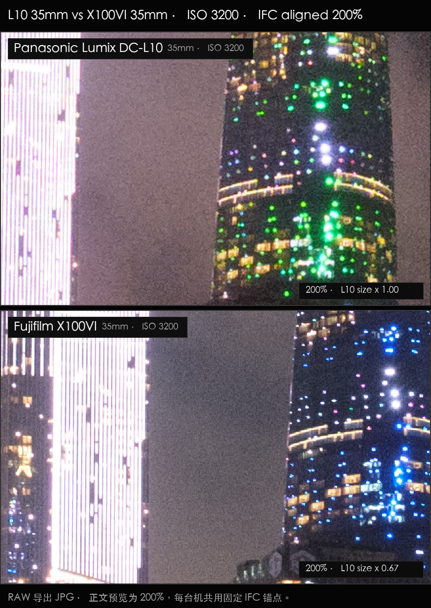
ISO 3200 时，X100VI 的优势主要体现在噪点颗粒更细，灯牌边缘也更容易分辨。L10 不是完全糊掉，但颗粒更硬，雾气和高光边缘更容易粘在一起。这个档位已经能看出 40MP APS-C 给后期留下的余量。
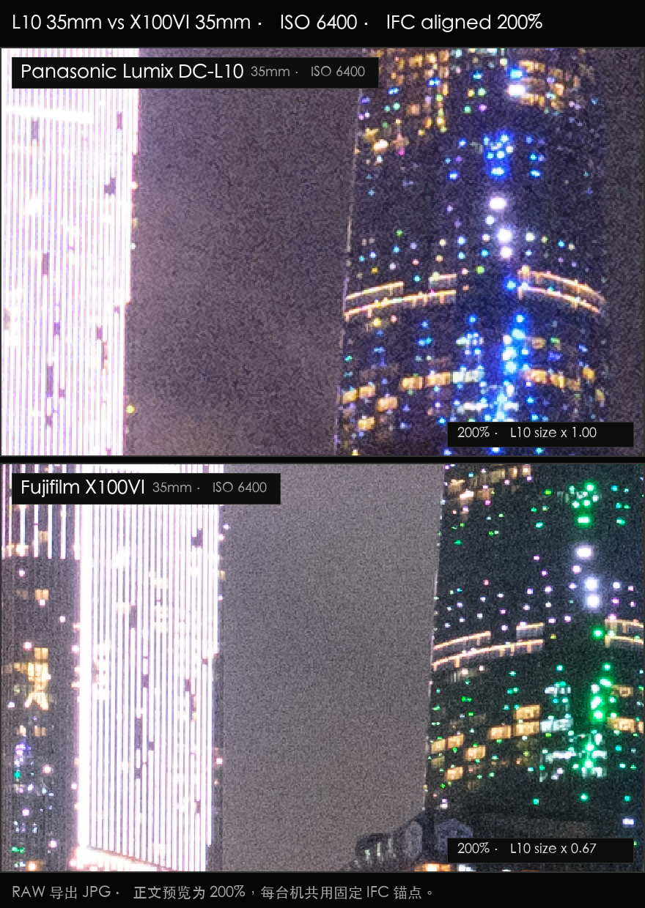
ISO 6400 开始，X100VI 的高像素优势没有消失。归一化以后，它还能用更细的采样把噪点压得没那么粗；L10 的灯牌边缘更容易发散，暗部颗粒也更硬。小图输出时差距会缩小，但 200% 看细节，X100VI 明显更有余量。
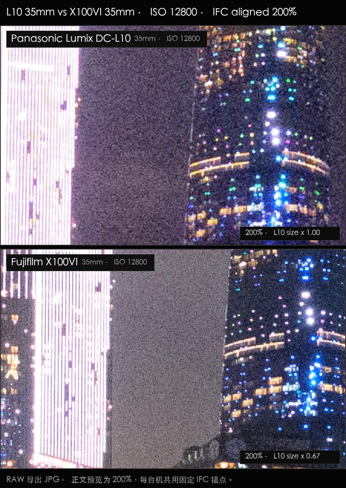
ISO 12800 下，X100VI 仍然能留住更多边缘信息，L10 的颗粒和灯牌光晕会更明显地混在一起。这里的结论仍然只针对 L10：这个档位基本不可用，放在文章里只是为了看极限效果，不适合当成实际拍摄建议。
L10 vs S9：全幅上限和低决策
S9 是我最容易拿来和 L10 比的机器，因为它小，而且全幅。画质、高感、宽容度、虚化和 RAW 后期空间都比 L10 更强，S9 + 40mm F2 的人像质感也明显强过 L10。S9 + 18-40mm 还能组成很轻的全幅旅行组合。
但我用 S9 时，经常会卡在出门前那一步：今天带手动镜头，还是自动定焦蛋糕头？要不要上 28-70mm 这种大光圈标变？或者干脆 28-200mm 天涯头一镜到底？S9 当然也可以搭大镜头，但也失去了便携性。
S9 还有几个很现实的取舍：无内置 EVF、无热靴、无机械快门，4K60 也需要裁切。这些不影响它的画质上限，但会影响我拿起来拍照的节奏。
L10 把 24-75mm、EVF、热靴、无裁切 4K60、4K120 都整合在一个机身里面。我要做的就是带出门。它和 S9 的关系更像另一种出门选择：S9 管画质上限，L10 管少决策和随手完成。
L10 vs GR4：口袋纯粹和焦段完整
GR4 代表的是几乎没有竞品的口袋 APS-C。它把小、薄、快做得很极端。
简单出门、城市扫街、随手带一台 GR 放裤兜里真的很方便。28mm 也很纯粹，它会逼你靠近，会逼你接受现场关系，会让拍摄节奏变得很干净。
L10 走另一条路。508g、镜头凸出、需要挂脖或放小包，同时换来 24-75mm、EVF、热靴和更多题材覆盖。旅行、风光、人像、咖啡馆、老酒店、局部细节这些题材一多，28mm 就会遇到限制。L10 的 24mm 可以拍环境，50mm 可以收人物，75mm 可以压一点距离，近摄还能拍细节。
GR 好不好看见仁见智，但我一直觉得一样东西小到一定程度，就会显得精致。黑色、低调、没有攻击性，街上拿出来不太打扰别人。L10 的好看更像一台现代版高级卡片机，它没有 GR 那种消失感，但有金属、镜头、EVF 和钛金色带来的物件感。
价格这件事也会影响判断。GR4 和 L10 如果放在接近的价格段里，选择就会落到口袋性和焦段完整之间。GR4 的不可替代是口袋，L10 的不可替代是 24-75mm 和完整相机入口。
L10 vs X100VI：颜值、高像素定焦裁切和真实光学变焦
X100VI 代表 APS-C 高像素定焦裁切，也代表一类非常成熟的复古旁轴审美。35mm 等效 F2、40.2MP 约 4000 万像素、混合取景器、机身防抖、内置闪光灯和富士胶片模拟，都让它在 35mm 日常视角里非常完整。高像素也让它从 35mm 裁到 50mm、75mm 时仍然有余量。
X100VI 的 50mm 和 75mm 是从 35mm 画面里取中间，L10 的 50mm 和 75mm 是真实光学焦段。L10 靠 24-75mm 的焦段一致性成立。
X100VI 的复古感来自一整套系统：旁轴轮廓、金属顶盖、外露转盘、混合取景器和富士胶片模拟放在一起。很多人买 X100VI，不只是买 APS-C 定焦，也是在买一种很明确的相机形象。
L10 的颜值竞争点不同。它是钛合金色、金属外壳、固定变焦镜头、EVF 和老高端卡片机情绪。X100VI 更像成熟、好看的复古定焦相机；L10 更像一台带着 TC-1 / LX 记忆的现代高级随身机。两者都会影响“我愿不愿意把它带出门”，只是审美方向不同。
这组对比里，X100VI 赢在 35mm 定焦、40.2MP 高像素裁切、机身防抖、内置闪光灯、混合取景器和完整复古颜值；L10 赢在 24-75mm 光学变焦、EVF、热靴、实时 LUT、更低决策的一体化，以及另一种钛合金高级随身机气质。
X100VI 和 L10 的区别，不是定焦和变焦谁更高级。X100VI 把 35mm、40.2MP、机身防抖、内置闪光灯、混合取景器和富士胶片模拟收在一台成熟的定焦相机里；L10 把 24-75mm 光学变焦、EVF、热靴、实时 LUT 和更低决策的一体化放在一起。X100VI 更像一台完整的 35mm 定焦机，L10 更像一台焦段完整的高级随身变焦机。
L10 vs Type109：血统参照
Type109 / LX100 这条线负责说明 L10 从哪里来：4/3 路线、24-75mm F1.7-2.8、高阶便携变焦，以及比例切换、对焦模式切换这些操作记忆。
它们共同的核心，是一台机器解决大部分日常题材。L10 明显接着这条线往下走。
L10 是现代化版本。它更大、更重，也更现代；它有实时 LUT、现代对焦、翻转屏、连接流程和更完整的视频参数。喜欢 Type109 / LX100 的人会理解 L10 的来源，但也要接受它已经换成今天的机器逻辑。
Type109 在这篇里只做血统参照。L10 要回答的问题，是这套老高端便携机逻辑，放到今天还能不能继续成立。
L10 vs 一英寸手机：计算摄影和相机操作
一英寸手机主摄已经很强。白天 23/24mm、HDR、夜景、多帧降噪、人像算法和即时分享，手机甚至更省事。
手机比较复杂，主摄、数字裁切、长焦模块、夜景模式、人像模式和算法融合要分开看。24mm 主摄是一回事，2x 主摄裁切是一回事，长焦副摄又是另一回事。
L10 和手机的差异落在 24-75mm 真实光学变焦和相机操作。50mm、75mm 是同一颗镜头的光学焦段。EVF、实体拨轮、半按快门、RAW 和实时 LUT 也会改变拍摄节奏。
手机更强的是省事：自动 HDR、夜景、多帧降噪、锐化、分享链路都已经替我处理好。L10 要争取的是贴近 EVF、转动变焦环、半按快门、用 LUT 决定画面气质的拍摄过程。
我想要的不是计算摄影的自然画面，而是高光、暗部、皮肤和背景过渡都还带着相机味的画面。它不一定每次都比手机讨好，但可控性、焦段一致性和直出气质会更接近我拿相机出门的理由。
05 视频能力
L10 有和 M43 旗舰对齐的视频参数。
L10 最高可以拍 5.6K 17:9 60p，也有 5.2K 4:3 30p，4K 16:9 最高到 120p，FHD 最高到 240p。对我来说，最重要的不是“数字很高”，而是常用 16:9 视频基本不用为了高帧率明显丢广角视角，4K 120p 慢动作也可以单独拿出来拍一组。
| 模式 | 规格 | 我会怎么用 |
|---|---|---|
| 高规格横向视频 | 5.6K 17:9 最高 60p | 环境空镜、固定机位、人像小段落，后期还有一点裁切余量 |
| 高比例素材 | 5.2K 4:3 最高 30p | 适合后期再裁横竖屏，不急着现场决定最终比例 |
| 常用 4K 慢动作 | 4K 16:9 最高 120p | 拍咖啡、手部动作、转身、走动细节，重点是 16:9 下不用明显牺牲视角 |
| 更高倍慢动作 | FHD 最高 240p | 画质优先级低一点，但可以拍一些气氛片段 |
它可以拍高规格视频，也适合做一些固定机位、轻微手持、咖啡静物、环境空镜、人物小段落。实时 LUT 也能让短视频有统一色彩，不必每段都进后期重新调。
更重要的是流程。L10 的视频体验不只是看规格，而是照片、视频、快慢速视频之间切换很顺，而且参数互相独立。拍完照片后可以马上切到视频或慢动作，这对旅行记录非常实用。旅行现场不会等我慢慢改参数：雾突然起来、同行人走过去、咖啡端上桌、山路出现一个细节，错过就错过了。
我会把照片、常规视频和慢动作分别设成不同的拍摄状态。照片按静态记录来，视频保留稳定的 16:9 和 LUT，慢动作单独服务手部动作、走动、雾气、咖啡和环境空镜。Cinelike A2 也可以作为一种接近 ARRI 取向的直出色彩来用，适合视频直出和轻后期，不必每段素材都重新建立色彩方向。
但它没有 IBIS，不适合当 Vlog 主力。边走边拍、追着人移动，Pocket 4 方便得多。L10 能拍视频，但更适合有控制地拍，适合当照片之外的视频补充，也适合拍一些高画质慢动作。
06 爱群大酒店实拍
爱群大酒店室内人像
拍摄选在一家很有历史的酒店。光线很复杂，窗外自然光、室内暖黄灯混在一起。为了应对这种环境，我在 L10 上挂了一支闪光灯，同时加了 1/4 黑柔。
这组拍摄主要遇到四种光线场景。
第一种是室内自然光，晴天白平衡。让人物靠近窗边，让自然光落在脸上，五官轮廓和明暗过渡都会更自然。这种情况可以压低 ISO，画面也会更干净。
第二种是室外直闪，自动白平衡。阴天光线比较平，画面平淡。直闪可以把脸、眼神光和衣服提出来。闪光灯支持 TTL，无脑直闪就行。镜间快门也让我在室外直闪时更有余地。
第三种是室内直闪，压低 ISO。酒店走廊没有自然光，只有昏黄灯光。晴天白平衡配合直闪，可以保留环境的黄色氛围，同时让人物肤色更白皙，也能从背景里跳出来。
第四种是纯室内灯光。有些时候我不想把人拍得太正确，而是想让人融进旧酒店的复古电影感里。不开闪使用晴天白平衡，画面会整体偏黄。光线不足时，长焦端 F2.8 可能会到 ISO 3200，会丢失一些细节。好在 L10 是黑白噪点，不会让画面变脏。所以我没有降噪，也没有后期加颗粒，保留了原图 RAW 转 JPG 接近胶片颗粒的质感。
24-75mm 包含常用黄金焦段，可以在狭窄空间通过变焦完成多种构图。24mm 交代环境与人，广角人像通过构图可以很有视觉冲击。35mm 拍带环境的半身，透视自然。50mm 可以筛掉杂乱背景。75mm 适合聚焦人脸、肩颈、手部和道具，也能压缩空间。
这颗镜头锐度不高，但我对人像摄影不追求锐化。所以我全程光圈全开。大光圈能带来一定虚化量，焦外也相当柔润，但不能要求 L10 拍出糖水人像，背景必然是画面中的重要组成，这迫使我思考人和环境之间的关联。
黑柔在爱群这种环境里很顺。它不是为了把画面磨平，而是柔化高光，降低一点数码锐感，让灯光、窗光和反光别那么硬。老酒店、夜晚、室内暖灯这类场景，本来就不需要每一处边缘都锋利得很现代。
一台 L10、一支小闪光灯、一片 1/4 黑柔，已经足够组成一套轻便的人像单兵创作组合。它不是专业棚拍方案，也不是弱光万能解，但在咖啡馆人像、老酒店人像、室内环境人像、探店、旅行同行、小红书图文和简单短视频空镜里，确实让我从随身记录多走到轻量创作这一步。
07 云南旅行：500g 的 L10 会不会成为负担？
端午期间我带 L10 去了云南芒市和腾冲，也上了高黎贡山和打鹰山。这个场景和爱群大酒店刚好互补：爱群证明它能做轻量人像创作，云南更像一次远门旅行记录。风景、植物、昆虫、野生菌、火山口、雾气、人物、路标、局部细节，全都在同一趟行程里出现。
这趟下来，我对 500g 左右的体积接受度比想象中高。L10 不是口袋机，不能像 GR 那样塞进裤兜，但作为远门旅行相机，它没有明显增加出行负担。挂脖、放小包、徒步时随手拿出来，都还在可以接受的范围里。
简单出门我会选 GR 放口袋。但远门旅行不一样，28mm 会很难拍。旅行的不确定性太高，下一秒可能是山路、寺庙、市场、植物、火山口，也可能是同行人的一个表情。这个时候 L10 的 24-75mm 变焦和近摄能力比 28mm 定焦更稳。很多时候拍得到比拍得好更重要，24-75mm 比 28mm 更像一份保险。
徒步时最重要的是轻装和方便。L10 的价值不是让我背上一套“完整摄影系统”，而是在尽量少带东西的前提下，保留广角、标准视角、中长焦、微距、视频和 LUT 直出的选择。GR 适合简单出门，L10 更适合远门旅行。
高黎贡山：雨雾、湿度和密封性错误示范
高黎贡山这两天都有下雨。山上大雾、大雨，湿度很高。后半程 L10 内部起雾，相当于做了一次错误示范。
这段经历让我对 L10 的适用场景更清楚：它适合轻装徒步，但不是三防相机。大雨、高湿、伸缩镜头结构叠在一起，确实会把风险放大。下次再遇到类似天气，我会更早把它收起来，或者至少少让伸缩镜头长时间暴露在雨雾里。
拍摄体验上，高黎贡山反而很能说明 L10 的用处。山上有很多野生菌、昆虫、树叶、水汽和路边细节，变焦和微距能力全部派上用场。风光拍摄时我尽量保持 F4，兼顾画质和进光量，也尽量降低 ISO，保证画质。树荫底下或者光线不足时，会适当开大光圈，ISO 尽量控制在 3200 以下。
所以高黎贡山这一段让我确认了两件事：L10 适合轻装徒步，但它不是拿来硬扛天气的机器。它能帮我拍到很多 28mm 口袋机不容易处理的细节，也让我真实遇到了一次伸缩镜头在大雨和高湿环境里的风险。
打鹰山：大雾里的电影感、比例和 LUT
打鹰山是休眠火山，火山口是凹陷的平原，植物有一种原始平原感。徒步难度不高，但雨季天气不好，山上大雾，小雨像全程补水喷雾。
这次我吸取了高黎贡山的教训：大雨时打伞，没打伞时用手掌挡住镜头伸缩部分。至少这一次，L10 没有再次起雾。
雾起来的时候，能见度只有十米左右。天气当然不好，但画面反而很有电影感。山顶、雾气、低对比、植物平原和火山口地形，会让画面自然进入一种横幅叙事感。
这组也让我想到，L10 的比例切换可以和 LUT 放在一起看。16:9 不只是为了裁得更宽，它可以直接配电影感 LUT，让雾气、山顶和火山口平原进入更明确的横幅叙事。1:1 也不是只能当社交平台方图，如果配宝丽来方向的 LUT，反而会有一种即时影像、小相纸的感觉，适合拍路牌、植物、同行人的小表情或者局部细节。
打鹰山让我意识到，多画幅不是摆设。它不只是后期裁切余量的问题，而是现场就可以决定画面气质：16:9 + 电影感 LUT 是一条路，1:1 + 宝丽来 LUT 也是另一条路。
08 总结
只问画质和全幅上限，我会选 S9。简单出门，我会选 GR。想要 35mm 定焦、40.2MP 高像素裁切、机身防抖、内置闪光灯和复古旁轴颜值，X100VI 更完整。
但远门旅行和日常创作，我还是会在意 L10。24mm 到 75mm 都在，EVF 在，热靴在，实时 LUT 在，实体操作也在。出门前少纠结一点，拿起来就能拍。它让我更像是在拿一台相机拍照，而不是在管理一套系统。
L10 也很适合当新手的第一台相机。它足够完整：焦段、EVF、热靴、直出、视频和实体操作都在，新手不用一开始就被镜头选择和系统搭配拖住。实时 LUT 也降低了后期门槛，可以往理光、富士、哈苏、胶片这些方向模拟，先在取景时看到自己想要的颜色。前提是你接受它的静态画质不能按全画幅、中画幅那套期待来买。
它也很适合当大机器的备机。如果你已经有哈苏、全画幅系统，或者一套认真干活的设备，L10 反而可以负责那些不想背大包、但又想认真拍两张的场景。大机器负责画质和仪式，L10 负责随身和出片。
爱群和云南这两组实拍，把这个感受落到了具体场景里。爱群说明 L10 带上黑柔和小闪之后，可以从随身记录走到轻量人像创作；云南说明它在远门旅行里不会明显增加负担，又能靠 24-75mm、微距、多画幅和视频切换处理很多不确定画面。
开头说过，曾经流行过一句话：手机导致卡片机的消亡。但这几年卡片机又重新火起来，我觉得不是偶然。手机很方便，可它给不了相机的仪式感和情绪价值。取景、半按快门、变焦、按下快门那一下，还有一台真实相机握在手里的感觉，这些都会改变我拍照时的状态。
手机算法也有自己的局限。它可以把夜景拍亮，把人像背景算虚，把 HDR 拉得很完整，但有些画面会显得太聪明、太处理。相机留下来的光线、层次、皮肤质感和背景过渡，反而更接近我想要的照片。
但只靠仪式感和情绪价值也不够。Pocket 4 这种设备已经把轻量视频做得很顺，手机又永远在身上。传统相机厂商如果不继续变化，不把小型化、直出、视频切换、分享流程和操作体验做得更顺，手机和 Pocket 这类新型拍摄设备迟早会带来更大的压力。
所以我会把 L10 看成一个开始。它让我看到 M43 重新回到小相机位置的可能：够完整，愿意带出门，也保留了相机本身的拍摄感。只是我还希望下一步能更小。下一台如果是可换镜头的 GM / GX 系列，我希望它继续往小、轻、愿意带出门的方向做。就像 X-M5 那样，它舍弃了很多东西，但确实把机身做得很小。只是我希望松下如果再做这类小相机，能在小机身里尽量保留更多相机感：EVF、热靴、实时 LUT 和实体操作。如果是固定镜头小相机，我更希望它能用上完整传感器面积，真正和 GR4 正面竞争。
世界需要小相机。很多照片先要靠一台愿意带出门的相机，后面才谈参数和准备。L10 还不是终点，但它让我重新看到这个方向。